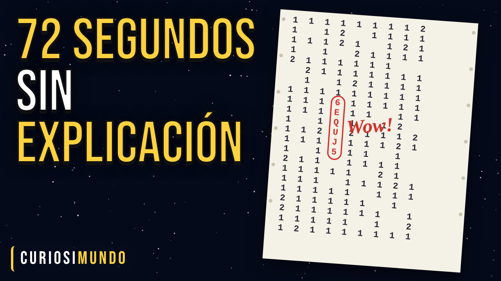

<!doctype html>
<!--
  CURIOSIMUNDO · 10 · La señal «Wow!» (TikTok, 9:16, 54 s). Resumen del vídeo de YouTube.
  Datos: 15 de agosto de 1977, Big Ear (Ohio), Jerry Ehman, 6EQUJ5, ~30 veces el ruido, ~1420 MHz (hidrógeno), nunca se repitió.
  "72 SEGUNDOS" en el fotograma 0.
-->
<html data-width="1080" data-height="1920" data-fps="30" data-duration="54.4" data-safe-zone="reels">
<head><link rel="stylesheet" href="lib/cm.css"><script src="lib/cm.js"></script><script src="lib/wow.js"></script>
<style>
  body { background: radial-gradient(1200px 1400px at 50% 40%, #1565C0, #0B2A5B 75%); }
  #band { position:absolute; left:0; top:560px; width:1920px; height:1080px; transform: scale(.5625); transform-origin: 0 0; overflow:hidden; z-index:2; }
  #frame { position:absolute; left:0; top:556px; width:1080px; height:616px; border-top:4px solid #FFD23F; border-bottom:4px solid #FFD23F; z-index:3; pointer-events:none; }
  .ttl { position:absolute; left:40px; right:40px; top:250px; height:290px; display:flex; align-items:center; justify-content:center; text-align:center; z-index:5;
         font: 400 118px/.92 'Bebas Neue'; text-shadow: 0 10px 40px rgb(0 0 0 / .6); opacity:0; }
  .ttl em { font-style:normal; color:#FFD23F; }
  #vcaps { position:absolute; inset:0; z-index:8; pointer-events:none; }
  .vc { position:absolute; left:50px; right:50px; top:1240px; text-align:center; isolation:isolate; font: 850 86px/1.1 Inter; letter-spacing:-.02em; }
  .vc .w { display:inline-block; padding:0 .14em; --hl:0; position:relative; color: color-mix(in oklab, #0B2A5B calc(var(--hl) * 100%), #fff);
           text-shadow: 0 5px 0 rgb(0 10 40 / calc(.7 - var(--hl) * .7)), 0 8px 30px rgb(0 0 0 / calc(.5 - var(--hl) * .5)); }
  .vc .pl { position:absolute; left:0; top:.02em; height:1.08em; border-radius:.22em; z-index:-1; background:#FFD23F; }
  #promo { z-index: 6; }
</style></head>
<body>
<audio src="voz.mp3"></audio>
<audio src="musica.mp3" data-volume="0.5" data-duck="0.45" data-fade-out="1"></audio>
<audio src="sfx.mp3" data-volume="0.6"></audio>
<section class="scene" id="s0" data-start="0" data-duration="7.0"></section>
<section class="scene" id="s1" data-start="6.9" data-duration="6.9"></section>
<section class="scene" id="s2" data-start="13.7" data-duration="11.0"></section>
<section class="scene" id="s3" data-start="24.6" data-duration="10.8"></section>
<section class="scene" id="s4" data-start="35.3" data-duration="5.4"></section>
<section class="scene" id="s5" data-start="40.6" data-duration="6.8"></section>
<section class="scene" id="promo" data-start="47.3" data-duration="7.1"></section>
<div id="titles"></div><div id="vcaps"></div>
<script>
gm.wait(fetch('voz.json').then(r => r.json()).then(words => {
  const W = CM.W(words, 0), G = { global: true }, tl = gm.timeline(null, G), $ = id => document.getElementById(id), mk = CM.mk;
  const sv = (id, bg) => { const s = mk('svg', { viewBox: '0 0 1080 1920', width: 1080, height: 1920, style: 'position:absolute;inset:0' }, $(id)); CM.defs(s); if (bg) $(id).style.background = bg; return s; };
  const band = (s, y = 600) => mk('svg', { x: 0, y, width: 1080, height: 608, viewBox: '0 0 1920 1080' }, s);
  const T = [[0, '<em>72</em> SEGUNDOS'], [2.4, 'LA SEÑAL MÁS<br><em>FAMOSA</em>'], [5.6, 'Y NUNCA<br><em>VOLVIÓ</em>'], [7.0, '15 · 8 · <em>1977</em>'], [10.2, 'BIG EAR<br><em>OHIO</em>'], [13.8, 'JERRY<br><em>EHMAN</em>'], [18.3, '<em>6EQUJ5</em>'], [21.9, '«<em>WOW!</em>»'],
    [24.7, '<em>×30</em><br>EL RUIDO'], [28.2, 'LA FRECUENCIA<br>DEL <em>HIDRÓGENO</em>'], [31.1, '¿UNA <em>LLAMADA</em>?'], [35.4, 'DÉCADAS<br><em>BUSCANDO</em>'], [39.8, '<em>NADA</em>'], [40.7, '¿COMETAS?<br>¿<em>SATÉLITES</em>?'], [44.9, '<em>NINGUNA</em><br>CONVENCE'], [47.4, '']];
  T.forEach(([at, html], i) => { const h = Object.assign(document.createElement('div'), { className: 'ttl', innerHTML: '<div>' + html + '</div>' }); $('titles').append(h); if (!html) return;
    const end = T[i + 1] ? T[i + 1][0] : 99;
    if (at === 0) { h.style.opacity = 1; tl.fromTo(h, { scale: 1.15 }, { scale: 1, duration: .5, ease: 'expo.out' }, 0); }
    else tl.fromTo(h, { opacity: 0, y: 90, scale: 1.2, filter: 'blur(10px)' }, { opacity: 1, y: 0, scale: 1, filter: 'blur(0px)', duration: .3, ease: 'expo.out' }, at);
    tl.to(h, { opacity: 0, y: -80, duration: .18, ease: 'power2.in' }, end - .18); });
  const NIGHT = 'linear-gradient(#050a1a, #1d2a4a)';
  const waves = (s, x, y, n, col) => Array.from({ length: n }, () => mk('circle', { cx: x, cy: y, r: 10, fill: 'none', stroke: col, 'stroke-width': 6 }, s));
  const pulse = (sec, ws, t0, per, R) => gm.onFrame($(sec), (l, info) => ws.forEach((c, i) => { const k = (((info.time - t0) / per) + i / ws.length) % 1; c.setAttribute('r', 10 + k * R); c.setAttribute('opacity', 1 - k); }));
  /* s0: signal waves */
  const z0 = sv('s0', NIGHT); WOW.stars(z0, 160, 1080, 1920); pulse('s0', waves(z0, 540, 1000, 6, '#FFD23F'), 0, 2, 520); mk('circle', { cx: 540, cy: 1000, r: 18, fill: '#FFD23F' }, z0);
  /* s1: Big Ear */
  const z1 = sv('s1', 'linear-gradient(#050a1a 0%, #2a3a5a 45%, #2f5a2a 45%)'); WOW.stars(z1, 120, 1080, 860); const b1 = band(z1, 640); WOW.bigEar(b1);
  /* s2: printout */
  $('s2').style.background = '#1a1612'; const p = WOW.printout($('s2'), { left: 90, top: 560, w: 900, h: 660, rows: 15 }); p.ring.style.top = (20 + 8 * 38.1 - 10 - 0) + 'px';
  p.ring.style.opacity = 0; p.wow.style.opacity = 0; const cells = p.d.querySelectorAll('.wc'); ['seis', 'e', 'q', 'u', 'j', 'cinco'].forEach((w, i) => tl.to(cells[i], { color: '#d0312d', duration: .15 }, W(w) - .1));
  tl.to(p.ring, { opacity: 1, duration: .3 }, W('rodeó') - .2).to(p.wow, { opacity: 1, duration: .3 }, W('wow!') - .3);
  /* s3: spectrum */
  const z3 = sv('s3', '#0e1622'); const b3 = band(z3, 600); const spc = WOW.spectrum(b3, 200, 860, 1520); tl.from(spc.spike, { draw: 0, duration: .6 }, W('frecuencia') - .3);
  /* s4: dishes, nothing */
  const z4 = sv('s4', NIGHT); WOW.stars(z4, 200, 1080, 1920); const b4 = band(z4, 700); [0, 1, 2, 3, 4].forEach(i => { const g = mk('g', { transform: `translate(${260 + i * 350} ${980}) scale(1.2)` }, b4); mk('rect', { x: -10, y: -120, width: 20, height: 120, fill: '#8a96a4' }, g); mk('path', { d: 'M-120 -200 Q0 -60 120 -200 Q0 -150 -120 -200Z', fill: '#d8dde6' }, g); });
  /* s5: hypotheses crossed */
  const z5 = sv('s5', NIGHT); WOW.stars(z5, 200, 1080, 1920); const icons = [['COMETA', 'cometas,'], ['SATÉLITE', 'satélites'], ['NUBE DE GAS', 'nubes']].map(([ic, w], i) => { const d = CM.text($('s5'), 'big', ic, 600 + i * 190, 'font-size:120px'); tl.from(d, { opacity: 0, scale: .5, duration: .3 }, W(w) - .2); return d; });
  const xs = icons.map((d, i) => { const x = mk('path', { d: `M260 ${660 + i * 190} L820 ${660 + i * 190}`, stroke: '#E5484D', 'stroke-width': 16, opacity: 0 }, z5); return x; }); tl.to(xs, { opacity: 1, duration: .2, stagger: .25 }, W('ninguna') - .2);
  /* promo */
  const pr = $('promo'); pr.style.background = 'radial-gradient(1200px 1400px at 50% 40%, #1d2a5a, #050a1a 75%)';
  pr.innerHTML = `<div style="position:absolute;left:0;right:0;top:250px;text-align:center;font:400 104px/.95 'Bebas Neue'">LA HISTORIA COMPLETA<br>EN <span style="color:#FFD23F">YOUTUBE</span></div>
    <div id="card" style="position:absolute;left:90px;width:900px;top:520px;height:506px;border-radius:26px;overflow:hidden;box-shadow:0 30px 80px rgb(0 0 0 / .6);border:6px solid #fff">
      <div style="position:absolute;left:50%;top:50%;width:170px;height:120px;margin:-60px 0 0 -85px;background:#E5484D;border-radius:30px"></div>
      <div style="position:absolute;left:50%;top:50%;margin:-32px 0 0 -18px;border-left:62px solid #fff;border-top:34px solid transparent;border-bottom:34px solid transparent"></div></div>`;
  tl.from(pr, { opacity: 0, duration: .3 }, 47.3).from(pr.children[0], { y: 60, opacity: 0, duration: .4, ease: 'expo.out' }, 47.4).from('#card', { scale: .6, opacity: 0, duration: .5, ease: 'back.out(1.6)' }, 47.6)
    .to('#card', { scale: 1.04, duration: .5, ease: 'sine.inOut', yoyo: true, repeat: 6 }, 48.3);
  ['s1', 's2', 's3', 's4', 's5'].forEach(id => tl.from($(id), { opacity: 0, duration: .2 }, +$(id).dataset.start));
  /* vertical captions */
  const ws = words.map(w => ({ text: w.word, start: w.start, end: w.end })), ph = [[]];
  ws.forEach((w, i) => { const cur = ph.at(-1), prev = ws[i - 1];
    if (cur.length && (cur.length === 3 || cur.map(x => x.text).join(' ').length + w.text.length > 16 || w.start - prev.end > .28 || /[.!?,:…]$/.test(prev.text) || /^¿/.test(w.text))) ph.push([]);
    ph.at(-1).push(w); });
  const ct = gm.timeline(null, G), els = ph.map(p => { const el = document.createElement('div'); el.className = 'vc'; el.innerHTML = '<i class="pl"></i>' + p.map(w => `<span class="w">${w.text}</span>`).join(' '); $('vcaps').append(el); return el; });
  return document.fonts.ready.then(() => ph.forEach((p, k) => {
    const el = els[k], sp = el.querySelectorAll('.w'), pl = el.querySelector('.pl'), nx = ph[k + 1], bx = i => ({ x: sp[i].offsetLeft, width: sp[i].offsetWidth });
    ct.fromTo(pl, { ...bx(0), scale: .5, opacity: 0 }, { scale: 1, opacity: 1, duration: .16, ease: 'back.out(2)' }, p[0].start - .04);
    p.forEach((w, i) => { ct.fromTo(sp[i], { opacity: 0, y: 40, scale: .6 }, { opacity: 1, y: 0, scale: 1, duration: .22, ease: 'back.out(2.4)' }, w.start - .06);
      if (i) ct.to(pl, { ...bx(i), duration: .1, ease: 'power3.out' }, w.start - .08);
      ct.to(sp[i], { '--hl': 1, duration: .05 }, w.start - .03).to(sp[i], { '--hl': 0, duration: .05 }, p[i + 1] ? p[i + 1].start - .08 : Math.min(w.end + .3, nx ? nx[0].start - .2 : 99)); });
    ct.to(el, { opacity: 0, duration: .12 }, nx ? nx[0].start - .18 : p.at(-1).end + .7);
  }));
}));
</script>
</body>
</html>
